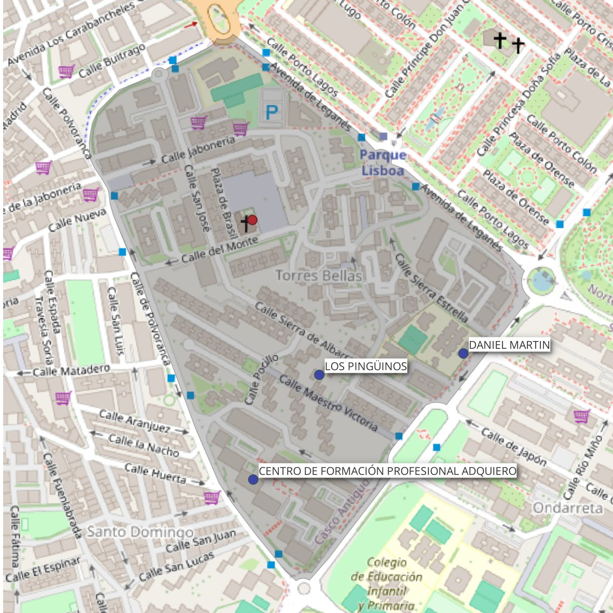

Puntos de interés en el territorio parroquial
Parroquia Nuestra Señora de la Saleta (Alcorcón) · Arciprestazgo de Alcorcón
Entidades religiosas no católicas
No hay ninguna entidad religiosa no católica en el territorio de esta parroquia.
Centros educativos

3 centros educativos en el territorio de la parroquia (público: 2, privado: 1).
| Centro | Tipo | Titularidad | Domicilio | Web |
|---|---|---|---|---|
| CENTRO DE FORMACIÓN PROFESIONAL ADQUIERO | Centro privado de formación profesional específica | Privado | Calle de la Sierra de Alcubierre, 6-8, 28923 Alcorcón | |
| DANIEL MARTIN | Colegio de educación infantil, primaria y secundaria | Público | Avenida del Alcalde José Aranda, 45, 28923 Alcorcón | Página web |
| LOS PINGÜINOS | Escuela infantil | Público | Calle de la Sierra de Albarracín, s/n, 28923 Alcorcón | Página web |
Fuente: registro de centros educativos de la Comunidad de Madrid. Solo se recogen los centros en situación de alta.